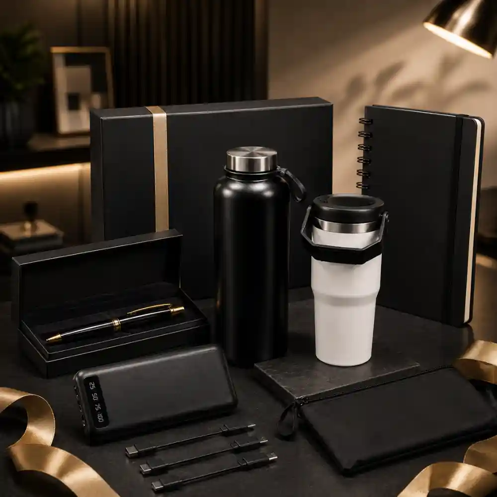

Daftar Isi
Manfaat corporate gift set bagi branding perusahaan terletak pada kemampuannya memperkuat brand recall, membangun loyalitas klien, dan menciptakan kesan profesional yang konsisten melalui barang bermerek yang digunakan sehari-hari oleh penerima.
- Corporate gift set meningkatkan brand recall melalui penggunaan barang sehari-hari
- Memperkuat hubungan jangka panjang dengan klien dan mitra bisnis
- Menjadi media promosi pasif yang berkelanjutan
- Meningkatkan rasa dihargai pada karyawan internal
- Mendukung citra profesional perusahaan di mata public
Apa Manfaat Utama Corporate Gift Set bagi Perusahaan?
Manfaat utama corporate gift set adalah memperkuat citra brand, mempererat hubungan bisnis, dan meningkatkan loyalitas klien maupun karyawan melalui pengalaman positif yang tercipta dari pemberian hadiah.
Beberapa manfaat konkret yang umum dirasakan perusahaan:
- Meningkatkan brand recall. Barang bermerek yang digunakan penerima secara rutin membantu perusahaan tetap diingat dalam jangka panjang.
- Memperkuat loyalitas klien. Klien yang merasa dihargai cenderung lebih terbuka untuk melanjutkan kerja sama bisnis.
- Membangun citra profesional. Kemasan dan isi yang rapi mencerminkan standar kualitas layanan perusahaan.
- Meningkatkan motivasi karyawan. Ketika diberikan secara internal, gift set dapat menjadi bentuk apresiasi yang meningkatkan semangat kerja.
Bagaimana Corporate Gift Set Memengaruhi Citra Brand?
Corporate gift set memengaruhi citra brand melalui kesan visual, kualitas barang, dan konsistensi pesan yang disampaikan kepada penerima.
Beberapa aspek yang memengaruhi persepsi penerima terhadap brand melalui gift set:
- Desain kemasan yang mencerminkan identitas visual perusahaan
- Kualitas barang yang digunakan sebagai isi gift set
- Ketepatan waktu pengiriman terutama untuk momen tertentu
- Personalisasi pesan melalui kartu ucapan atau elemen custom lainnya
Secara umum, gift set yang dirancang dengan detail konsisten cenderung meninggalkan kesan yang lebih kuat dibandingkan hadiah generik tanpa sentuhan branding yang jelas.

Set Merchandise Eksklusif untuk Memperkuat Branding
Siapa yang Diuntungkan dari Corporate Gift Set?
Pihak yang diuntungkan dari corporate gift set meliputi klien eksternal, mitra bisnis, karyawan internal, dan perusahaan itu sendiri melalui penguatan hubungan dan citra brand.
Rincian pihak yang mendapat manfaat:
- Klien dan mitra bisnis merasa dihargai dan lebih terikat secara emosional dengan perusahaan
- Karyawan internal memperoleh apresiasi yang dapat meningkatkan loyalitas kerja
- Tim marketing memperoleh media promosi tambahan yang relatif hemat biaya jangka panjang
- Perusahaan secara keseluruhan memperoleh reputasi positif di lingkungan bisnis
Berdasarkan pengamatan umum di industri barang promosi, perusahaan yang secara rutin memberikan merchandise bermerek kepada klien cenderung memiliki tingkat interaksi ulang yang lebih baik dibandingkan yang tidak melakukannya sama sekali, meskipun besarannya dapat berbeda tergantung sektor bisnis.
Apa Perbedaan Manfaat Gift Set untuk Klien dan Karyawan?
Gift set untuk klien lebih berfokus pada penguatan hubungan bisnis dan promosi brand, sedangkan gift set untuk karyawan lebih berfokus pada apresiasi dan motivasi internal.
Perbedaan pendekatan tersebut memengaruhi jenis isi dan gaya penyampaian gift set:
- Gift set klien cenderung lebih formal dengan branding yang menonjol
- Gift set karyawan bisa lebih personal dan fleksibel sesuai preferensi individu
- Momen pemberian juga berbeda, misalnya klien pada penutupan proyek, karyawan pada hari besar internal perusahaan

Solusi Gift Set dari Vendor Terpercaya
Kesimpulan
Corporate gift set memberikan manfaat ganda, yaitu memperkuat hubungan bisnis eksternal sekaligus meningkatkan loyalitas internal karyawan.
Untuk memaksimalkan manfaat tersebut, perusahaan perlu memastikan konsistensi branding, kualitas barang, dan ketepatan momen pemberian sesuai dengan target penerima.
Butuh Bantuan Merancang Corporate Gift Set?
Tim ahli kami siap membantu Anda menyusun paket hadiah eksklusif yang menarik.
Pilihan barang akan disesuaikan dengan ketersediaan budget dan kebutuhan Anda.
Seluruh desain kemasan akan kami selaraskan dengan identitas visual perusahaan Anda.
Dapatkan penawaran harga terbaik untuk pesanan massal!
FAQ Seputar Branding dan Corporate Gift
Apa manfaat utama corporate gift set bagi perusahaan?
Manfaat utamanya adalah memperkuat brand recall, mempererat hubungan bisnis, dan meningkatkan loyalitas klien maupun karyawan.
Apakah corporate gift set efektif untuk branding jangka panjang?
Secara umum efektif, terutama jika barang yang diberikan berkualitas dan digunakan secara rutin oleh penerima dalam aktivitas sehari-hari.
Apakah gift set untuk klien dan karyawan harus berbeda?
Ya, umumnya berbeda karena tujuan dan konteks pemberiannya juga berbeda, sehingga isi dan gaya kemasan perlu disesuaikan.
Maroon Souvenir
Partner Corporate Gift terpercaya di Indonesia. Berpengalaman melayani ratusan perusahaan sejak 2018.
Lihat Portofolio Kami